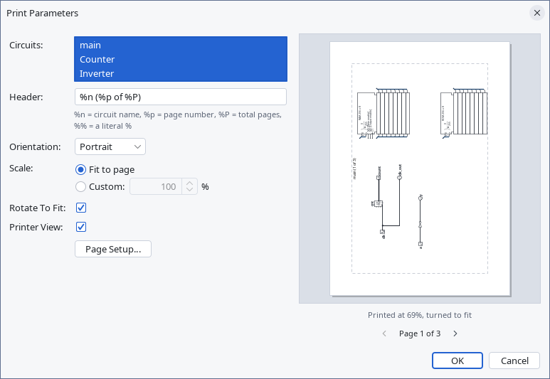
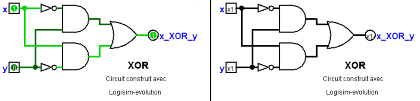

Printing
When you choose | Print... |, Logisim displays a dialog box for configuring what is printed. The options are on the left; on the right a preview shows each page as it will be printed.

Configuration of the printing
- Circuits: A list where you can select one or more circuits to be printed. (Empty circuits are not displayed as options.) Logisim will print one circuit per page.
-
Header: Text that should appear centered at the top of each page. The following substitutions will be made into the text.
%n Name of circuit on page %p Page number %P Total page count %% A single percent sign ('%') - Orientation: Whether the paper is used upright (Portrait) or on its side (Landscape).
- Scale: With Fit to page, each circuit is enlarged or reduced so that it fills the page. With Custom, every circuit is printed at the percentage you give, where 100% prints each pixel of the canvas at 100% zoom as one point (1/72 inch). A circuit too large for the page at that size is cut off, and the preview says so.
- Rotate To Fit: If checked, then Logisim will rotate each circuit by 90 degrees when the circuit is too large to fit onto the page and it does not need to be scaled as small when rotated 90 degrees.
- Printer View: Whether to use "printer view" in printing the circuits.
- Page Setup...: Opens the printing system's page setup, where you choose the paper size and the margins.
Preview
The preview shows the whole sheet of paper. The dashed line marks the margins, and the header is shown with its substitutions made. Below the page, Logisim gives the scale the circuit is printed at, and says when the circuit is turned to fit or is too large for the page. The preview follows every change you make to the options. When several circuits are selected, use the arrows under the preview to step through the pages.

This option is also available in "Print view:" in the export of circuits. This will change the display in the workspace.
After clicking OK , Logisim will display the standard print dialog box, where you choose the printer, before printing the circuits.